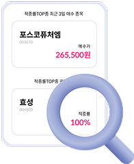
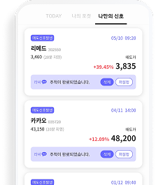

대한민국 대표 주식AI, 라씨 매매비서
AI매매신호를 소개합니다.
매매타이밍의 정답,
AI매매신호
AI매매신호
어떤 종목이든 고도화된 알고리즘이 사고팔 시점과 정확한 가격을 알려드립니다.
두리뭉실한 전망, 일관적인 목표가와 손절가 답답하셨죠?
이런 애매한 의견은 끝!
정확한 가격과 타이밍을 실시간으로 알려드립니다.
이런 애매한 의견은 끝!
정확한 가격과 타이밍을 실시간으로 알려드립니다.
AI매매신호 발생 즉시 실시간 알림
실시간으로 분석하고 발생 그 즉시 실시간 알림으로 알려드립니다.
매매시점은 AI에게 맡겨놓으세요.
전종목에 대한 AI매매신호
코스피, 코스닥은 물론, ETF까지 전종목을 분석합니다.
어떤 종목이라도AI매매신호가 정확한 매매타이밍을 제시합니다.
검증된 성과,
믿을 수 있는 AI매매신호
믿을 수 있는 AI매매신호
AI매매신호는 자신있습니다!
2015년 최초 주식AI서비스 출시 이후 지속적인 연구 개발로 알고리즘을 고도화 합니다.
2015년 최초 주식AI서비스 출시 이후 지속적인 연구 개발로 알고리즘을 고도화 합니다.

AI가 매매한 모든 내역은 각 종목의 AI매매신호 메뉴에 모두 확인하실 수 있습니다.
적중률, 수익률은 물론 이전의 모든 매수/매도 시점과 가격까지 모든 것을 공개합니다.
적중률, 수익률은 물론 이전의 모든 매수/매도 시점과 가격까지 모든 것을 공개합니다.
오직, 라씨 매매비서에서만
나만의 매도신호
나만의 매도신호
오직 한사람을 위한 맞춤형 매도신호!
매수가를 입력하면 그 매매에 대한 매도타이밍을 위한 AI분석이 시작됩니다.
매수가를 입력하면 그 매매에 대한 매도타이밍을 위한 AI분석이 시작됩니다.

매수 시점이 다르면 매도 시점도 달라져야 합니다.
매수가가 등록되는 즉시, 실시간 모니터링이 시작됩니다.
AI가 제공하는 한 사람을 위한 맞춤형 매도신호, 오직 라씨 매매비서에서 만나실 수 있습니다.
매수가가 등록되는 즉시, 실시간 모니터링이 시작됩니다.
AI가 제공하는 한 사람을 위한 맞춤형 매도신호, 오직 라씨 매매비서에서 만나실 수 있습니다.